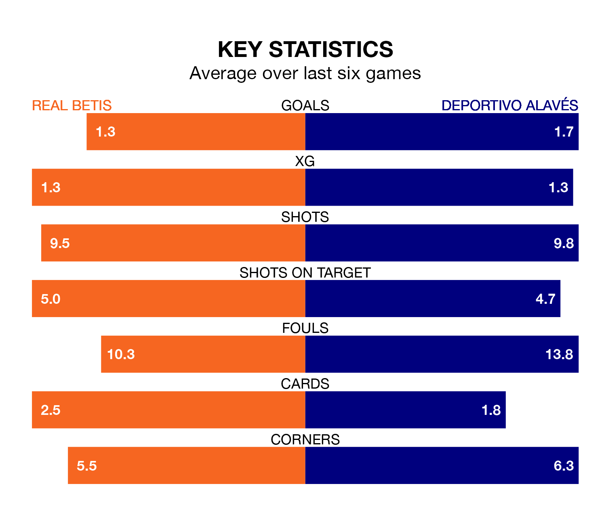

Real Betis host Deportivo Alavés on Sunday at the Estadio Benito Villamarín in La Liga.
In their last league match, on February 9, Betis beat Cádiz 2-0 away, with goals from Pablo Fornals and Willian José.
Alavés drew, 1-1 at home against Villarreal on February 10, with Samu Omorodion scoring their goals.
In the last 10 years, Betis and Alavés have played each other on 16 occasions. Betis won seven of them, Alavés five, and they drew four times.
On average, Betis scored 1.4 goals and Alavés 1.1 in those matches.
Their last meeting was on January 6, when Alavés won 1-0 at home.
With 24 goals in 24 games so far this season, Alavés are scoring at below the league average rate with 1.0 goals per game. And they are conceding at an average rate, letting in 31 goals at a rate of 1.3 per game.
Betis are also below average scorers, with 1.2 goals per game, compared to a league average of 1.3. They have conceded 1.0 goal per game.
The home team are sixth in the table after 24 games, of which they have won nine and drawn 11, earning 38 points.
Depor are six places behind Betis in 12th, with seven wins and six draws putting them on 27 points.
Betis are in mixed form in La Liga, with three wins and a draw from their last six games.
With three wins and two draws over that period, the visitors' form is slightly better – they have taken 11 points from 18, compared to the hosts' 10.
Sunday's match will be refereed by Mateo Busquets Ferrer, who has taken charge of 12 La Liga games so far this season, issuing six red cards and booking 69 players. He has awarded three penalties.
The last Betis game Busquets Ferrer refereed was a 0-0 away draw with Real Sociedad on December 17. His last Alavés match was their 2-1 loss away at FC Barcelona on November 12.
Updated: 13:04 (UTC), 16/02/24